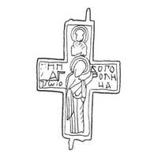

Catalog › CE-0973 · KOR2003-II.4.3.26
Valvă de revers de encolpion cu Agiosoritissa și sfânt sus, inscripții turnate (descriere comună 26–27)
sec. prima jumătate XIII (1201–1250) · loc necunoscut
single valve of a reliquary cross, aramă; c. prima jumătate XIII (1201–1250); find spot unknown.


Identificare
- Categorie
- Valvă izolată
- Material
- Aramă
- Tehnică
- Turnare în relief
- Dimensiuni
- Î 64 × L 45 mm
Iconografie
- Revers
- Maica Domnului Orantă; Neidentificat
- Descriere revers
- Una din cele două valve de revers de encolpion descrise împreună (26–27). La una dintre ele (imaginea celei de a doua nu este dată) sunt rupte balamaua stângă de sus și cea dreaptă de jos. Reliefurile Maicii Domnului Agiosoritissa și ale unui sfânt sus sunt completate cu inscripții de ambele părți ale imaginii centrale.
- Inscripții
- [Н]НК/[Л]А/[Н]Ѡ[АН]; БОГО/[Р]ОДН/ЧА
- Limba
- Slavonă
Datare și atribuire
- Datare
- sec. prima jumătate XIII (1201–1250)
- Centru
- Necunoscut
- Tipologie
- Korzukhina–Peskova 2003, tip II 4 3
Descoperire
- Context
- Colecție (fără context)
Păstrare și referințe
- Bibliografie
- G. F. Korzukhina, A. A. Peskova, Древнерусские энколпионы. Нагрудные кресты-реликварии XI–XIII вв., Sankt-Petersburg, 2003 [Korzukhina–Peskova 2003], p. 101, cat. nr. II 4 3/26, reprodusă la Табл. 47 (planșe, p. 289). Bibliografie citată în sursă: Уваров 1908, № 96–97, рис. 161; Корзухина, архив ф. 77, д. 15, л. 126.
- Figura
- Табл. 47
- Planșe
- Korzukhina–Peskova 2003, Табл. 47 (planșă fără paginație proprie în PDF; p. 289 tipărită)
- Observații
- Datare după Peskova: sec. prima jumătate XIII. Proveniență în colecție: la începutul sec. XX se afla în colecția Uvarov; locul actual de păstrare necunoscut. Dimensiuni: dimensiuni date împreună pentru ambele valve (26–27). Intrările 26 și 27 sunt descrise împreună în sursă; lectura inscripțiilor de verificat pe original. Credit desen: G. F. Korzuhina, după Uvarov 1908. Coordonate: nu sunt date în sursă.
Citare: Corpus Encolpiorum, CE-0973, Valvă de revers de encolpion cu Agiosoritissa și sfânt sus, inscripții turnate (descriere comună 26–27), --root/piese/KOR2003-II.4.3.26/ (accesat 2026-10-17).